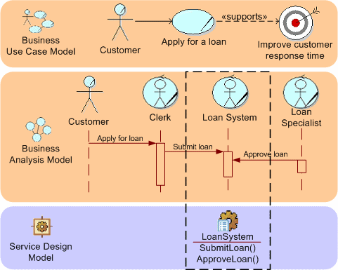

In the development of more traditional component-based and object-oriented solutions, there tends to be a set of
transformations across levels of abstraction and adding levels of detail from Use Cases down to system design. This is
especially true when you take a Business Use Case as the starting point, as demonstrated in the Guideline: Going from Business Models to Systems; where the guidance
demonstrates how to get from Business Use Cases to System Use Cases, we still have to develop an actual design model
from there.
Fortunately, we can also draw a parallel to the guideline provided for going to system-use cases in defining how a
service model can be derived from a Business Use Case Model, as shown below. In general the approach is to create a
candidate service for each operation defined on a Artifact: Business Worker in the Artifact: Business Analysis Model. There exists a
distinct parallel here to the Task:
Business Process Analysis where individual tasks in a process model are identified as candidate services.

This more direct connection between the business-analysis model and the service model allows for not only services that
can be seen to support the business needs, but by having less transformations between the expression of business needs
and the solution, we can more effectively respond to change in the Business Use Case or Analysis Models. Another
important aspect is that as the Business Use Case model also includes the Business Goals that are driving the business,
it is now much easier to actually identify the alignment between Services and Goals. For example, it is now possible to
list, for any Service Specification, all the Business Goals to which it contributes. For any Business Goal we can list
the Services actually deployed in our IT organization that contribute to the goal , by following the connection from
service to service specification.
|